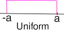
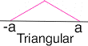
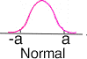

|
2.
Measurement Process Characterization
2.5. Uncertainty analysis 2.5.4. Type B evaluations
|
|||
| Difficulty of obtaining reliable uncertainty estimates | The methods described on this page attempt to avoid the difficulty of allowing for sources of error for which reliable estimates of uncertainty do not exist. The methods are based on assumptions that may, or may not, be valid and require the experimenter to consider the effect of the assumptions on the final uncertainty. | ||
| Difficulty of obtaining reliable uncertainty estimates |
The ISO guidelines do not allow worst-case estimates of bias to be
added to the other components, but require they in some way be
converted to equivalent standard deviations. The approach is to
consider that any error or bias, for the situation at hand, is a random
draw from a known statistical distribution. Then the standard deviation
is calculated from known (or assumed) characteristics of the
distribution. Distributions that can be considered are:
|
||
| Standard deviation for a uniform distribution |
The uniform distribution leads to
the most conservative estimate of uncertainty; i.e., it gives the
largest standard deviation. The calculation of the standard deviation
is based on the assumption that the end-points, ± a, of the distribution
are known. It also embodies the assumption that all effects on
the reported value, between -a and +a, are equally likely
for the particular source of uncertainty.

|
||
| Standard deviation for a triangular distribution |
The triangular distribution leads to a less
conservative estimate of uncertainty; i.e., it gives a smaller
standard deviation than the uniform distribution. The calculation
of the standard deviation is based on the assumption that the
end-points, ± a, of the distribution are known and the mode of
the triangular distribution occurs at zero.

|
||
| Standard deviation for a normal distribution |
The normal distribution leads to the least
conservative estimate of uncertainty; i.e., it gives the smallest
standard deviation. The calculation of the standard deviation is
based on the assumption that the end-points, ± a, encompass 99.7
percent of the distribution.

|
||
| Degrees of freedom | In the context of using the Welch-Saitterthwaite formula with the above distributions, the degrees of freedom is assumed to be infinite. | ||